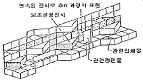
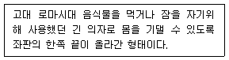
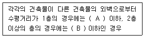
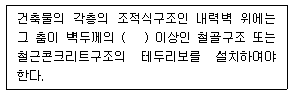
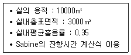
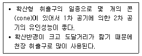

실내건축기사(구) (2018-03-04 기출문제)
1과목: 실내디자인론
1. 상품의 유효진열 범위 내에서 고객의 시선이 편하게 머물고 손으로 잡기에도 가장 편안한 높이인 골든 스페이스의 범위로 알맞은 것은?
- 450~850mm
- 850~1250mm
- 1300~1500mm
- 1500~1700mm
(정답률: 88%)

2. 시각적 중량감에 관한 설명으로 옳지 않은 것은?
- 밝은 색이 어두운 색보다 시각적 중량감이 크다.
- 크기가 큰 것이 작은 것보다 시각적 중량감이 크다.
- 불규칙적인 형태가 기하학적 형태보다 시각적 중량감이 크다.
- 색의 중량감은 색의 속성 중 특히 명도, 채도에 영향을 받는다.
(정답률: 81%)
3. 개방식 배치의 일종으로 의사전달의 커뮤니케이션과 작업흐름의 실제적 패턴에 의한 레이아웃을 기초로 하는 것은?
- 유니버설 플랜
- 세포형 오피스
- 복도형 오피스
- 오피스 랜드스케이프
(정답률: 86%)
4. 다음 중 좋은 디자인을 판단하는 기준과 가장 거리가 먼 것은?
- 재료의 선택
- 시대성의 반영
- 기능성의 부여
- 상징적 표현의 비율
(정답률: 63%)
5. 다음 중 주택의 실내 치수 계획으로 가장 부적절한 것은?
- 현관의 폭 : 1200mm
- 세면기의 높이 : 550mm
- 부엌 작업대의 높이 : 800mm
- 주택 내부의 복도 폭 : 900mm
(정답률: 73%)
6. 단독주택의 현관에 관한 설명으로 옳지 않은 것은?
- 거실, 계단, 화장실과 가까이 위치하는 것이 좋다.
- 거실의 일부를 현관으로 만드는 것은 지양하도록 한다.
- 현관의 위치는 도로의 위치와 대지의 형태에 영향을 받는다.
- 주택 측면에 현관을 배치한 경우 동선처리가 편리하고 복도 길이가 짧아진다.
(정답률: 67%)
7. 업무공간의 책상배치 유형에 관한 설명으로 옳지 않은 것은?
- 십자형은 팀 작업이 요구되는 전문직 업무에 적용할 수 있다.
- 좌우대향(대칭)형은 비교적 면적 손실이 크며 커뮤니케이션 형성도 다소 힘들다.
- 동향형은 책상을 같은 방향으로 배치하는 형태로 비교적 프라이버시의 침해가 적다.
- 대향형은 커뮤니케이션 형성이 불리하여, 주로 독립성 있는 데이터 처리 업무에 적용된다.
(정답률: 67%)
8. 다음 그림과 같이 연속적인 주제를 연관성 있게 표현하기 위해 선(線)형으로 연출하는 특수전시 기법은?

- 디오라마 전시
- 파노라마 전시
- 아일랜드 전시
- 하모니카 전시
(정답률: 79%)
9. 선의 종류별 조형 효과가 옳지 않은 것은?
- 수직선 – 위엄, 절대
- 사선 – 약동감, 속도감
- 곡선 – 유연함, 미묘함
- 수평선 – 우아함, 풍요로움
(정답률: 82%)
10. 실내공간을 구성하는 기본 요소 중 바닥에 관한 설명으로 옳지 않은 것은?
- 천장과 더불어 공간을 구성하는 수평적 요소이다.
- 외부로부터 추위와 습기를 차단하고 사람과 물건을 지지한다.
- 바닥은 고저차가 가능하므로 필요에 따라 공간의 영역을 조정할 수 있다.
- 인간의 시선이나 동선을 차단하고 공기의 움직임, 소리의 전파, 열의 이동을 제어한다.
(정답률: 81%)
11. 질감에 관한 설명으로 옳지 않은 것은?
- 거친 질감은 빛을 흡수하여 시각적으로 가볍고 안정된 느낌을 준다.
- 촉각 또는 시각으로 지각할 수 있는 어떤 물체 표면상의 특징을 말한다.
- 효과적인 질감 표현을 위해서는 색체와 조명을 동시에 고려하여야 한다.
- 질감의 선택에서 중요한 것은 스케일, 빛의 반사와 흡수, 촉감 등이다.
(정답률: 86%)
12. 고정창에 관한 설명으로 옳지 않은 것은?
- 적정한 자연 환기량 확보를 위해 사용된다.
- 크기에 관계없이 자유롭게 디자인할 수 있다.
- 형태에 관계없이 자유롭게 디자인할 수 있다.
- 유리와 같이 투명재료일 경우 창이 있는 것을 알지 못해 부딪힐 위험이 있다.
(정답률: 71%)
13. 건축화조명에 관한 설명으로 옳지 않은 것은?
- 캐노피조명은 카운터 상부, 욕실의 세면대 상부 등에 설치된다.
- 광창조명은 광원을 넓은 면적의 벽면에 매입하여 비스타(vista)적인 효과를 낼 수 있다.
- 코니스조명은 벽면의 상부에 위치하여 모든 빛이 아래로 직사하도록 하는 조명방식이다.
- 코브조명은 창이나 벽의 상부에 부설된 조명으로 하향일 경우 벽이나 커튼을 강조하는 역할을 한다.
(정답률: 61%)
14. 천장에 매달려 조명하는 조명방식으로 조명기구 자체가 빛을 발하는 악세서리 역할을 하는 것은?
- 코브(cove)
- 브라켓(bracket)
- 펜던트(pendant)
- 코니스(cornice)
(정답률: 84%)
15. 다음 중 주거공간의 조닝(zoning) 방법과 가장 거리가 먼 것은?
- 융통성에 의한 구분
- 주 행동에 의한 구분
- 사용시간에 의한 구분
- 프라이버시 정도에 따른 구분
(정답률: 68%)
16. 상점의 판매형식 중 대면판매에 관한 설명으로 옳지 않은 것은?
- 포장대나 계산대를 별도로 둘 필요가 없다.
- 귀금속과 같은 소형 고가품 판매점에 적합하다.
- 고객과 마주 대하기 때문에 상품 설명이 용이하다.
- 진열된 상품을 자유롭게 직접 접촉하므로 선택이 용이하다.
(정답률: 74%)
17. 다음 설명에 알맞은 가구의 종류는?

- 세티(settee)
- 카우치(couch)
- 체스터필드(chesterfield)
- 라운지 소파(lounge sofa)
(정답률: 68%)
18. 디자인 원리 중 대비에 관한 설명으로 옳지 않은 것은?
- 극적인 분위기를 연출하는데 효과적이다.
- 상반된 요소의 거리가 멀수록 대비의 효과는 증대된다.
- 지나치게 많은 대비의 사용은 통일성을 방해할 우려가 있다.
- 모든 시각적 요소에 대하여 상반된 성격의 결합에서 이루어진다.
(정답률: 75%)
19. 실내디자인 프로세스의 기본계획 단계에 포함되지 않는 것은?
- 내부적 요구 분석
- 계획의 평가기준 설정
- 기본계획 대안들의 도면화
- 건축적 요소와 설비적 요소의 분석
(정답률: 64%)
20. 시스템 가구에 관한 설명으로 옳은 것은?
- 기능보다 디자인 측면에서 단순미가 강조되어야 한다.
- 특정한 사용목적이나 많은 물품을 수납하기 위해 건축화된 가구이다.
- 기능에 따라 여러 가지 형으로 조립 및 해체가 가능하여 공간의 융통성을 꾀할 수 있다.
- 모듈화된 단위 구성재의 결합을 통해 다양한 디자인으로 변형이 가능해야 하기 때문에 대량생산이 어렵다.
(정답률: 65%)
2과목: 색채학
21. JPG와 GIF의 장점만을 가진 포맷으로 트루컬러를 지원하고 비손실 압축을 사용하여 이미지 변형 없이 원래 이미지를 웹상에 그대로 표현할 수 있는 포맷 형식은?
- PCX
- BMP
- PNG
(정답률: 79%)
22. 광원에 따라 물체의 색이 달라 보이는 것과는 달리 서로 다른 두 색이 어떤 광원 아래서는 같은 색으로 보이는 현상은?
- 연색성
- 잔상
- 분광반사
- 메타메리즘
(정답률: 51%)
23. 스컬러 모멘트(scalar moment)라는 면적 비례를 적용하여 조화론을 전개한 학자는?
- 오스트발트
- 먼셀
- 문∙스펜서
- 비렌
(정답률: 57%)
24. NCS 표기법의 “S2030-Y90R”에 대한 설명 중 틀린 것은?
- NCS색 견본 두 번째 판(second edition)을 뜻한다.
- 20%의 검정색도와 30%의 유체색도이다.
- YR의 혼합비율로 90%의 빨강 색도를 띤 노란색이다.
- 90%의 노란 색도를 띤 빨간색을 뜻한다.
(정답률: 51%)
25. 색채의 강약감과 관련이 있는 색의 속성은?
- 채도
- 명도
- 색상
- 배색
(정답률: 59%)
26. 빛의 강도가 바뀌거나 눈의 순응상태가 바뀌어도 눈에 보이는 색은 변하는 것이 아니라는 것을 경험하는 현상은?
- 색순응
- 암순응
- 명순응
- 무채순응
(정답률: 77%)
27. 다음 중 주택의 색채 조절에 있어서 조명이 가장 밝아야하는 곳은?
- 거실
- 침실
- 부엌
- 복도
(정답률: 67%)
28. 오스트발트 색체계의 색채 조화 원리가 아닌 것은?
- 등백계열
- 등흑계열
- 등순계열
- 등명계열
(정답률: 75%)
29. 다음 중 순색의 채도가 높은 것끼리 짝지어지진 것은?
- 노랑, 주황
- 회색, 초록
- 연두, 청록
- 초록, 파랑
(정답률: 71%)
30. 비렌(Faber Birren)의 색채조화론에서 다음 중 가장 밝으면서 부드러운 톤은?
- Shade
- Tint
- Gray
- Color
(정답률: 80%)
31. 색의 3속성 중 명도의 의미는?
- 색의 이름
- 색의 맑고 탁함의 정도
- 색의 밝고 어두움의 정도
- 색의 순도
(정답률: 84%)
32. 먼셀기호 ″5R 8/3″이 나타내는 의미는?
- 색상 5R, 채도 8, 명도 3
- 색상 5R, 명도 8, 채도 3
- 색상 3R, 명도 8, 채도 5
- 색상 5R, 채도 11, 명도 3
(정답률: 76%)
33. 다음 중 식당에서 식욕을 증진시키기 위한 색으로 사용하기 가장 적절한 것은?
- R-RP 계통의 명도 4정도
- Y-GY 계통의 명도 4정도
- B-PB 계통의 채도 6정도
- R-YR 계통의 채도 6정도
(정답률: 78%)
34. 잔상이나 대비현상을 간단하게 설명할 수 있는 색각이론을 만든 사람은?
- 영∙헬름홀츠
- 헤링
- 오스트발트
- 먼셀
(정답률: 51%)
35. 어둠이 깔리기 시작하면 추상체와 간상체가 작용하여 상이 흐릿하게 보이는 상태는?
- 시감도
- 박명시
- 항상성
- 색순응
(정답률: 63%)
36. 관용색명 중 원료에 따른 색명으로 맞는 것은?
- 피콕그린
- 베이지
- 라벤더
- 세피아
(정답률: 49%)
37. 다음 색 중 무채색은?
- 황금색
- 회색
- 적색
- 밤색
(정답률: 85%)
38. 다음 중 가시광선의 파장영역은?
- 약 380~780nm
- 약 300~600nm
- 약 300~650nm
- 약 490~900nm
(정답률: 79%)
39. 망막에서 명소시의 색채시각과 관련된 광수용이 이루어지는 부분은?
- 간상체
- 추상체
- 봉상체
- 맹점
(정답률: 66%)
40. 색채조화에 관한 설명 중 틀린 것은?
- 색의 3속성을 고려한다.
- 색채조화에서 명도는 중요하지 않다.
- 색상이 다르면 색조를 유사하게 한다.
- 면적비에 따라 조화의 느낌이 달라질 수 있다.
(정답률: 84%)
3과목: 인간공학
41. 실내색채에 있어서 특히 천장에 적합한 반사율과 색으로 가장 적합한 것은?
- 반사율 약 50~60%의 청색, 남색
- 반사율 약 15~20%의 검정, 군청색
- 반사율 약 15~30%의 녹색, 황토색, 회색
- 반사율 약 80~90%의 백색, 상아(象牙)색, 크림(cream)색
(정답률: 79%)
42. 인체의 각 기관계와 해당하는 기관이 맞게 연결된 것은?
- 순환계 : 신경
- 호흡기계 : 후두
- 순환계 : 위장
- 호흡기계 : 림프관
(정답률: 71%)
43. 눈의 시세포에 관한 설명으로 맞는 것은?
- 원추세포는 색을 구분할 수 없다.
- 원추세포의 수는 간상세포의 수보다 많다.
- 간상세포는 난색계열의 색을 구분할 수 있다.
- 사람의 한 눈에는 1억 3천만여개의 간상세포가 있다.
(정답률: 50%)
44. 물리적 자극을 상대적으로 판단할 때 변화감지역은 기준 자극의 크기에 비례한다는 법칙은?
- Fitts 법칙
- Miller 법칙
- Weber 법칙
- Norman 법칙
(정답률: 64%)
45. 인간-기계 체계(Man-machine System) 분류 중 기계화 체계의 예로 적합한 것은?
- 자동교환기
- 자동차의 운전
- 컴퓨터공정제어
- 장인과 공구의 사용
(정답률: 52%)
46. “소음작업”은 1일 8시간 작업을 기준으로 얼마 이상의 소음이 발생하는 작업을 말하는가?
- 85dB
- 90dB
- 95dB
- 100dB
(정답률: 61%)
47. 운전대에 대한 일반적인 설명으로 틀린 것은?
- 운전대의 직경은 35.6~38cm가 적당하다.
- 스포츠카의 운전대는 경사도 60~90° 사이가 이상적이다.
- 버스나 화물차등의 운전대는 45~60° 정도로 기울어져 있는 것이 좋다.
- 크고 무거운 차량의 동력조절 장치가 없는 운전대는 수직으로 설치한다.
(정답률: 70%)
48. 인체에서의 열교환 과정을 나타내는 열균형 방정식의 요소가 아닌 것은?
- 복사
- 대류
- 전도
- 증발
(정답률: 53%)
49. 인간공학에 대한 설명 중 틀린 것은?
- 인간요소를 고려한 학문으로서 일본에서 태동하였다.
- 실용적 효능과 인생의 가치 기준을 높이는데 목표를 두고 있다.
- 인간의 특성이나 행동에 대한 적절한 정보를 체계적으로 적용하는 것이다.
- 물건, 기구, 환경을 설계하는 과정에서 인간을 고려하는데 초점을 두고 있다.
(정답률: 75%)
50. 안전색과 그 일반적인 의미의 사용예가 바르게 짝지어진 것은?
- 파랑 - 지시 표지
- 노랑 - 방화 표지
- 빨강 - 안내 표지
- 녹색 - 방사능 표지
(정답률: 67%)
51. 수평 작업대 설계 시, 상완을 자연스럽게 수직으로 늘어 뜨린 상태에서 전완을 뻗어 파악할 수 있는 영역은?
- 최대작업영역
- 통상작업영역
- 정상적업영역
- 대칭작업영역
(정답률: 51%)
52. 눈의 구조에 대한 설명으로 맞는 것은?
- 원추체-색 구별, 황반에 밀집
- 원시-수정체가 두꺼워진 상태
- 망막-두께 조절로 초점을 맞춤
- 명조응 –동공확대, 30~40분 소요
(정답률: 55%)
53. 색채조절에 대한 설명으로 맞는 것은?
- 보통 기기에는 채도를 8 이상으로 유지해야 한다.
- 색을 볼 때 피로를 느끼는 것은 주로 명도에 영향을 받기 때문이다.
- 기계류의 중요한 부분은 주의를 집중시킬 수 있는 색으로 두드러지게 한다.
- 기계의 움직이는 부분과 조작의 중심점같이 집점이 되는 부분은 다른 부분과 비슷한 색채를 사용하는 것이 좋다.
(정답률: 73%)
54. 일반적인 지침(指針)의 설계의 요령으로 볼 수 없는 것은?
- 선각이 약 20°정도 되는 뾰족한 지침을 사용한다.
- 지침의 끝은 작은 눈금과 맞닿고, 겹치도록 해야 한다.
- 시차를 줄이기 위하여 지침은 눈금면과 밀착시킨다.
- 원형 눈금의 경우 지침의 색은 선단에서 눈금의 중심까지 칠한다.
(정답률: 63%)
55. 사람이 정확하고 정밀한 동작을 수행하기 위해 근육들이 반대 방향으로 작용을 하며 정적인 반응을 보이는데 이 때 근육의 잔잔한 떨림(진전, 振顫)이 일어난다. 진전을 감소시킬 수 있는 방법이 아닌 것은?
- 시각적인 참조
- 손이 심장높이보다 높게 함
- 작업 대상물에 기계적인 마찰을 생성
- 몸과 작업에 관계되는 부위를 잘 받침
(정답률: 50%)
56. 감각기관을 통하여 환경의 자극에 대한 정보를 감지하여 받아들이는 과정을 무엇이라 하는가?
- 지각
- 순응
- 청각
- 반응
(정답률: 75%)
57. 상하, 전진, 좌우운동을 탐지하는 귀 내부의 평형기관은?
- 고막
- 외이
- 중이
- 세반고리관
(정답률: 64%)
58. 생체리듬에 관한 설명으로 틀린 것은?
- 육체적 리듬(Physical rhythm)은 23일의 반복주기로 활동력, 지구력 등과 밀접한 관계가 있다.
- 위험일(Critical day)은 각각의 리듬이 (-)의 최저점에 이르는 때를 의미하며, 한 달에 6일 정도 발생한다.
- 지성적 리듬(Intellecrual rhythm)은 33일의 반복주기로 사고력, 기억력, 의지 판단 및 비판력과 밀접한 관계가 있다.
- 감성적 리듬(Sensitivity rhythm)은 28일의 반복주기로 신체 조직의 모든 기능을 통하여 발현되는 감정, 즉 정서적 희로애락, 주의력, 예감 및 통찰력 등을 좌우한다.
(정답률: 64%)
59. 생리적 긴장을 나타내는 척도(지표)가 아닌 것은?
- 혈압
- 심박수
- 작업 속도
- 호흡수
(정답률: 76%)
60. 연속적으로 변화하는 값을 표시하기에 가장 적합한 표시 장치(display)는?
- 계수형(digital)
- 회화형(pictogram)
- 동목형(moving scale)
- 동침형(moving pointer)
(정답률: 56%)
4과목: 건축재료
61. 미장재료의 경화작용에 관한 설명으로 옳지 않은 것은?
- 시멘트 모르타르는 물과 화학반응을 일으켜 경화한다.
- 회반죽은 물과 화학반응을 일으켜 경화한다.
- 반수석고는 가수 후 20~30분에서 급속 경화하지만, 무수석고는 경화가 늦기 때문에 경화촉진제를 필요로 한다.
- 돌로마이트 플라스터는 공기 중의 탄산가스와 화학반응을 일으켜 경화한다.
(정답률: 60%)
62. 다음 시멘트 조성광물 중 수축률이 가장 큰 것은?
- 규산3석회(CS)
- 규산2석회(C2S)
- 알루민산3석회(C3A)
- 알루민산철4석회(C4AF)
(정답률: 53%)
63. 굳지 않은 콘크리트의 성질을 나타내는 용어에 관한 설명으로 옳지 않은 것은?
- 펌퍼빌리티(pumpability)는 콘크리트 펌프를 사용하여 시공하는 콘크리트의 워커빌리티를 판단하는 하나의 척도로 사용된다.
- 워커빌리티(workability)는 컨시스턴시에 의한 부어넣기의 난이도 정도 및 재료분리에 저항하는 정도를 나타낸다.
- 플라스티시티(plasticity)는 수량에 의해서 변화하는 콘크리트 유동성의 정도이다.
- 피니셔빌리티(finishability)는 마무리하기 쉬운 정도를 말한다.
(정답률: 51%)
64. 목재의 건조방법 중 천연건조에 관한 설명으로 옳지 않은 것은?
- 비교적 균일한 건조가 가능하다.
- 시설 투자비용 및 작업비용이 적다.
- 건조 소요시간이 오래 걸린다.
- 잔적장소가 좁아도 가능하다.
(정답률: 72%)
65. 표준시방서에 따른 에폭시계도료 도장의 종류 중 내수, 내해수를 목적으로 사용할 때 가장 적합한 것은?
- 에폭시 에스테르 도료
- 2액형 에폭시 도료
- 2액형 후도막 에폭시 도료
- 2액형 타르 에폭시 도료
(정답률: 37%)
66. 대리석, 사문암, 화강암의 쇄석을 종석으로 하여 보통포틀랜드 시멘트 또는 백색포틀랜드 시멘트에 안료를 섞어 충분히 다진 후 양생하여 가공연마 한 것으로 미려한 광택을 나타내는 시멘트 제품은?
- 테라조판
- 펄라이트 시멘트판
- 듀리졸
- 펄프 시멘트판
(정답률: 55%)
67. 일종의 못박기총을 사용하여 콘크리트나 강재등에 박는 특수못을 의미하는 것은?
- 드라이브핀
- 인서트
- 익스팬션볼트
- 듀벨
(정답률: 57%)
68. 투명도가 높으므로 유기유리라는 명칭이 있으며, 착색이 자유롭고 내충격강도가 크고, 평판, 골판 등의 각종 형태의 성형품으로 만들어 채광판, 도어판, 칸막이벽 등에 쓰이는 합성수지는?
- 폴리스티렌수지
- 에폭시수지
- 요소수지
- 아크릴수지
(정답률: 78%)
69. 목재의 역학적 성질에 관한 설명으로 옳지 않은 것은?
- 목재 섬유 평행방향에 대한 인장강도가 다른 여러 강도 중 가장 크다.
- 목재의 압축강도는 옹이가 있으면 증가한다.
- 목재를 휨부재로 사용하여 외력에 저항할 때는 압축, 인장, 전단력이 동시에 일어난다.
- 목재의 전단강도는 섬유간의 부착력, 섬유의 곧음, 수선의 유무 등에 의해 결정된다.
(정답률: 69%)
70. 목재를 조성하고 있는 원소 중 차지하는 비중이 가장 큰 것은?
- 탄소
- 산소
- 질소
- 수소
(정답률: 69%)
71. 소성 점토벽돌에 관한 설명으로 옳지 않은 것은?
- 소성온도가 높을수록 흡수율이 적다.
- 붉은벽돌은 점토에 안료를 넣어서 붉게 만든 것이다.
- 소성이 잘 된 것일수록 맑은 금속성 소리가 난다.
- 과소품(過燒品)은 소성온도가 지나치게 높아서 질이 견고하고, 흡수율이 낮으나 형상이 일그러져 부정형이다.
(정답률: 65%)
72. 다음 중 방청도료에 해당되지 않는 것은?
- 광명단조합페인트
- 클리어 래커
- 에칭프라이머
- 징크로메이트 도료
(정답률: 49%)
73. 콘크리트의 블리딩 현상에 의한 성능저하와 가장 거리가 먼 것은?
- 골재와 페이스트의 부착력 저하
- 철근과 페이스트의 부착력 저하
- 콘크리트의 수밀성 저하
- 콘크리트의 응결성 저하
(정답률: 38%)
74. 각 목재 방부제의 특징에 관한 설명으로 옳지 않은 것은?
- 크레오소트유 : 도장이 불가능하며, 독성이 적고 자극적인 냄새가 난다.
- CCA : 도장이 가능하고 독성이 없으며 처리재는 무색이다.
- PCP : 도장이 가능하며 처리재는 무색으로 성능이 우수한 유용성 방부제이다.
- PF : 도장이 가능하고 독성이 있으며 처리재는 황록색이다.
(정답률: 40%)
75. 일반 석재와 비교한 화강암의 성질에 관한 설명으로 옳지 않은 것은?
- 내구성 및 강도가 크다.
- 내화도가 낮아 가열시 균열이 생긴다.
- 조각재료로 매우 적합하다.
- 절리의 거리가 비교적 커서 큰 판재로 생산할 수 있다.
(정답률: 46%)
76. 온도에 따른 탄소강의 기계적 성질에 관한 설명으로 옳지 않은 것은?
- 연신율은 200~300℃에서 최소로 된다.
- 인장강도는 500℃ 정도에서 상온 강도의 약 1/2로 된다.
- 인장강도는 100℃ 정도에서 최대로 된다.
- 항복점과 탄성한계는 온도가 상승함에 따라 감소한다.
(정답률: 49%)
77. 목재접합, 합판제조 등에 사용되며, 다른 접착제와 비교하여 내수성이 부족하고 값이 저렴한 접착제는?
- 요소수지 접착제
- 푸린수지 접착제
- 에폭시수지 접착제
- 실리콘수지 접착제
(정답률: 61%)
78. 실리콘 수지에 관한 설명으로 옳은 것은?
- 평판 성형되어 글라스와 같이 이용되는 경우가 많으며 유기유리라고도 불린다.
- 물을 튀기는 성질이 있어 방습켜가 없는 벽체에 주입하여 습기가 스며 오르는 것을 막는데 쓰인다.
- 아미노계에 속하는 열가소성수지로 내수성이 크고 열탕에서도 침식되지 않는다.
- 발포제로서 보드상으로 성형하여 단열재로 널리 사용되며 건축용 벽타일, 천장재, 전기용품 등에 쓰인다.
(정답률: 57%)
79. 강재의 부식과 방식에 관한 설명으로 옳은 것은?
- 전식은 공식보다 수명예측이 비교적 어려운 부식이다.
- 금속의 부식 형태 중 건식이 습식보다 부식에 대응하기 어렵다.
- 공식이란 강재 일부에 국부 전지를 형성하여 빠르게 부식하는 것을 말한다.
- 강재 방식법으로 건축에서 널리 사용되는 것은 전기화학적 방법이다.
(정답률: 43%)
80. 미장 바탕이 갖추어야 할 조건으로 옳지 않은 것은?
- 바름층과 유해한 화학반응을 하지 않을 것
- 바름층을 지지하는데 필요한 접착강도를 얻을 수 있을 것
- 바름층보다 강도, 강성이 크지 않을 것
- 바름층의 경화, 건조를 방해하지 않을 것
(정답률: 74%)
5과목: 건축일반
81. 학교 교실의 채광을 위하여 설치하는 창문 등의 면적은 교실 바닥면적의 최소 얼마 이상이어야 하는가? (단, 거실의 용도에 따른 기준 조도 이상의 조명장치를 설치한 경우는 제외한다.)
- 1/5
- 1/8
- 1/10
- 1/20
(정답률: 65%)
82. 외벽 중 비내력벽의 경우 내화구조로 인정받기 위한 기준으로 옳지 않은 것은?
- 철근콘크리트조 또는 철골철근콘크리트조로서 두께가 7cm 이상인 것
- 골구를 철골조로 하고 그 양면을 두께 3cm 이상의 철망모르타르 또는 두께 4cm 이상의 콘크리트블록∙벽돌 또는 석재로 덮은 것
- 철재로 보강된 콘크리트블록조∙벽돌조 또는 석조로서 철재에 덮은 콘크리트블록등의 두께가 4cm 이상인 것
- 무근콘크리트조 ㆍ 콘크리트블록조∙벽돌조 또는 석조로서 그 두께가 5cm 이상인 것
(정답률: 42%)
83. 주요구조부를 내화구조로 하여야 하는 대상 건축물의 기준으로 옳지 않은 것은?
- 문화 및 집회시설 중 전시장의 용도로 쓰이는 건축물로서 그 용도로 쓰는 바닥면적의 합계가 500m 이상인 건축물
- 창고시설의 용도로 쓰는 건축물로서 그 용도로 쓰는 바닥면적의 합계가 500m2 이상인 건축물
- 공장의 용도로 쓰는 건축물로서 그 용도로 쓰는 바닥면적의 합계가 1000m2 이상인 건축물
- 운동시설 중 체육관의 용도로 쓰는 건축물로서 그 용도로 쓰는 바닥면적의 합계가 500m2 이상인 건축물
(정답률: 33%)
84. 건축물의 피난・방화구조 등의 기준에 관한 규칙에 따른 방화구조의 기준으로 옳지 않은 것은?
- 철망모르타르로서 그 바름두께가 2cm 이상인 것
- 석고판위에 시멘트모르타르 또는 회반죽을 바른 것으로서 그 두께의 합계가 1.5cm 이상인 것
- 시멘트모르타르위에 타일을 붙인 것으로서 그 두께의 합계가 2.5cm 이상인 것
- 심벽에 흙으로 맞벽치기한 것
(정답률: 58%)
85. 왕대공 지붕틀의 부재 중 인장재가 아닌 것은?
- ㅅ자보
- 평보
- 왕대공
- 달대공
(정답률: 54%)
86. 다음은 소방시설법령에 따른 연소(延燒) 우려가 있는 건축물의 구조에 해당되는 기준 중 하나이다. ( )안에 들어갈 내용으로 옳은 것은?

- A : 5m, B : 10m
- A : 6m, B : 10m
- A : 5m, B : 12m
- A : 6m, B : 12m
(정답률: 49%)
87. 한국건축의 조형 의장상 특징과 거리가 먼 것은?
- 친근감을 주는 척도
- 착시현상 조정
- 자연과의 조화
- 인위적인 기교
(정답률: 75%)
88. 숙박시설의 객실간 경계벽의 구조 및 설치 기준으로 옳지 않은 것은?
- 내화구조로 하여야 한다.
- 지붕밑 또는 바로 윗층의 바닥판까지 닿게 한다.
- 철근콘크리트조의 경우에는 그 두께가 10cm 이상이어야 한다.
- 콘크리트블록조의 경우에는 그 두께가 15cm 이상이어야 한다.
(정답률: 50%)
89. 문화 및 집회시설 중 공연장의 각층별 거실면적이 1000m 일 때, 이 공연장에 설치하여야 하는 승용승강기의 최소대수는? (단, 공연장의 층수는 10층이며, 8인승 이상 15인승 이하 승강기 적용)
- 3대
- 4대
- 5대
- 6대
(정답률: 45%)
90. 소방시설 중 경보설비의 종류에 해당하지 않는 것은?
- 비상방송설비
- 자동화재탐지설비
- 자동화재속보설비
- 무선통신보조설비
(정답률: 62%)
91. 특급 소방안전관리대상물의 관계인이 선임하여야 하는 소방안전관리자의 자격기준으로 옳지 않은 것은?
- 소방기술사
- 소방공무원으로 10년 이상 근무한 경력이 있는 사람
- 소방설비기사의 자격을 취득한 후 5년 이상 1급 소방안전관리대상물의 소방안전관리자로 근무한 실무경력이 있는 사람
- 소방설비산업기사의 자격을 취득한 후 7년 이상 1급 소방안전관리대상물의 소방안전관리자로 근무한 실무경력이 있는 사람
(정답률: 72%)
92. 목조건물의 내진(耐震)설계에 관여하는 요소 중 가장 중요한 것은?
- 기초의 구조형태
- 마감재의 형태와 치수
- 가새의 배치법과 치수
- 지붕의 구조와 형태
(정답률: 50%)
93. 다음 중 모든 층에 스프링클러를 설치하여야 하는 경우가 아닌 것은?
- 문화 및 집회시설(동・식물원은 제외)로서 수용인원이 100명 이상인 것
- 층수가 11층 이상인 특정소방대상물
- 판매시설로서 바닥면적의 합계가 1000m2 이상인 것
- 노유자 시설의 용도로 사용되는 시설의 바닥면적의 합계가 600m2 이상인 것
(정답률: 45%)
94. 다음 중 방염성능기준 이상을 확보하여야 하는 방염대상 물품이 아닌 것은?
- 창문에 설치하는 커튼류
- 암막m2무대막
- 전시용 합판 또는 섬유판
- 두께가 2mm 미만인 종이벽지
(정답률: 74%)
95. 수평면, 수직면, 수직선과 수평선 및 기본색을 근간으로하여 순수 기하학적 추상주의를 표방하는 사조는?
- 신조형주의(Neo Plasticism)
- 요소주의(Elementalism)
- 순수주의(Purism)
- 절대주의(Suprematism)
(정답률: 51%)
96. 널의 옆물림을 위하여 한옆에는 혀를 내고 다른 옆은 홈을 파서 물린 형태로 보행의 진동이 있는 마루널깔기에 적합한 쪽매는?
- 제혀쪽매
- 맞댄쪽매
- 반턱쪽매
- 틈막이쪽매
(정답률: 75%)
97. 문화 및 집회시설 중 공연장의 개별 관람석의 바깥쪽에 있어 그 양쪽 및 뒤쪽에 각각 복도를 설치하여야 하는 최소 바닥면적의 기준으로 옳은 것은?
- 개별 관람석의 바닥면적이 300m2 이상
- 개별 관람석의 바닥면적이 400m2 이상
- 개별 관람석의 바닥면적이 500m2 이상
- 개별 관람석의 바닥면적이 600m2 이상
(정답률: 41%)
98. 건축물의 신축∙증축∙개축 등에 대한 행정기관의 동의 요구를 받은 소방본부장 또는 소방서장은 건축허가 등의 동의요구서류를 접수한 날부터 얼마 이내에 동의여부를 회신 하여야 하는가? (단, 특급 소방안전관리대상물이 아닌 경우)
- 3일 이내
- 4일 이내
- 5일 이내
- 6일 이내
(정답률: 76%)
99. 아파트가 특급 소방안전관리대상물로 되기 위한 기준으로 옳은 것은?
- 50층 이상(지하층은 제외한다)이거나 지상으로부터 높이가 200m 이상인 아파트
- 30층 이상(지하층은 제외한다)이거나 지상으로부터 높이가 120m 이상인 아파트
- 25층 이상(지하층은 제외한다)이거나 지상으로부터 높이가 100m 이상인 아파트
- 연면적 20만 m 이상인 아파트
(정답률: 35%)
100. 다음은 건축물의 구조기준 등에 관한 규칙에 따른 소규모건축물 중 조적식구조의 구조안전을 확보하기 위한 규정이다. ( )안에 들어갈 내용으로 옳은 것은?

- 1.0배
- 1.5배
- 2.0배
- 2.5배
(정답률: 64%)
6과목: 건축환경
101. 다음과 같은 조건을 가진 실의 잔향시간은?

- 약 1초
- 약 1.5초
- 약 2초
- 약 2.5초
(정답률: 50%)
102. 복사난방에 관한 설명으로 옳은 것은?
- 천장이 높은 방의 난방은 불가능하다.
- 실내의 쾌감도가 다른 방식에 비하여 가장 낮다.
- 외기 침입이 있는 곳에서는 난방감을 얻을 수 없다.
- 열용량이 크기 때문에 방열량 조절에 시간이 걸린다.
(정답률: 49%)
103. 자연환기에 관한 설명으로 옳지 않은 것은?
- 개구부 면적이 클수록 환기량은 많아진다.
- 실내외의 온도차가 클수록 환기량은 많아진다.
- 일반적으로 공기유입구와 유출구 높이 차이가 클수록 환기량은 많아진다.
- 2개의 창을 한 쪽 벽면에 설치하는 것이 양쪽 벽에 대면하여 설치하는 것보다 효과적이다.
(정답률: 75%)
104. 연속기포 다공질 흡음재료에 속하지 않는 것은?
- 암면
- 유리면
- 석고보드
- 목모시멘트판
(정답률: 33%)
1⑤. 열이나 유해물질이 실내에 널리 산재되어 있거나 이동되는 경우에 급기로 실내의 공기를 희석하여 배출시키는 환기방법은?
- 상향환기
- 전체환기
- 국소환기
- 집중환기
(정답률: 48%)
106. 실내 어느 한 점의 수평면 조도가 200lx이고, 이때 옥외 전천공 수평면 조도가 20000lx인 경우, 이 점의 주광률은?
- 0.01%
- 0.1%
- 1%
- 10%
(정답률: 33%)
107. 전기사업법령에 따른 저압의 범위로 옳은 것은?(2021년 개정된 KEC 규정 적용됨)
- 직류 500V 이하, 교류 1000V 이하
- 직류 1000V 이하, 교류 500V 이하
- 직류 600V 이하, 교류 750V 이하
- 직류 1500 이하, 교류 1000V 이하
(정답률: 41%)
108. 음파는 파동의 하나이기 때문에 물체가 진행방향을 가로막고 있다고 해도 그 물체의 후면에도 전달된다. 이러한 현상을 무엇이라 하는가?
- 잔향
- 굴절
- 회절
- 간섭
(정답률: 65%)
109. 열전도율에 관한 설명으로 옳은 것은?(오류 신고가 접수된 문제입니다. 반드시 정답과 해설을 확인하시기 바랍니다.)
- 열전도율의 단위는 W/m2K이다.
- 열전도율의 역수를 열전도 비저항이라고 한다.
- 액체는 고체보다 열전도율이 크고, 기체는 더욱더 크다.
- 열전도율이란 두께 1cm판의 양면에 1℃의 온도차가 있을때 1cm의 표면적을 통해 흐르는 열량을 나타낸 것이다.
(정답률: 37%)
110. 측창채광에 관한 설명으로 옳은 것은?
- 비막이에 불리하다.
- 천창채광에 비해 채광량이 많다.
- 편측채광의 경우 실내 조도분포가 균일하다.
- 근린의 상황에 의해 채광을 방해받을 수 있다.
(정답률: 72%)
111. 광원의 광색 및 색온도에 관한 설명으로 옳지 않은 것은?
- 색온도가 낮은 광색은 따뜻하게 느껴진다.
- 일반적으로 광색을 나타내는데 색온도를 사용한다.
- 주광색 형광램프에 비해 할로겐전구의 색온도가 높다.
- 일반적으로 조도가 낮은 곳에서는 색온도가 낮은 광색이좋다.
(정답률: 44%)
112. 전열에 관한 설명으로 옳은 것은?
- 벽체의 관류열량은 벽 양측 공기의 온도차에 반비례한다.
- 벽이 결로 등에 의해 습기를 포함하면 열관류 저항이 커진다.
- 유리의 열관류저항은 그 양측 표면 열전달 저항의 합의 2배 값과 거의 같다.
- 벽과 같은 고체를 통하여 유체(공기)에서 유체(공기)로 열이 전해지는 현상을 열관류라고 한다.
(정답률: 56%)
113. 겨울철 벽체 표면 결로의 방지 대책으로 옳지 않은 것은?
- 실내의 환기 횟수를 줄인다.
- 실내의 발생 수증기량을 줄인다.
- 단열강화에 의해 실내측 표면온도를 상승시킨다.
- 직접가열이나 기류촉진에 의해 표면온도를 상승시킨다.
(정답률: 72%)
114. 배수트랩에 관한 설명으로 옳지 않은 것은?
- 트랩은 배수능력을 촉진시킨다.
- 관트랩에는 P트랩, S트랩, U트랩 등이 있다.
- 트랩은 기구에 가능한 한 근접하여 설치하는 것이 좋다.
- 트랩의 유효봉수깊이가 너무 낮으면 봉수가 손실되기 쉽다.
(정답률: 37%)
115. 일반적으로 하향급수 배관방식을 사용하는 급수방식은?
- 고가수조방식
- 수도직결방식
- 압력수조방식
- 펌프직송방식
(정답률: 67%)
116. 간접가열식 급탕방법에 관한 설명으로 옳지 않은 것은?
- 열효율은 직접가열식에 비해 낮다.
- 가열 보일러로 저압 보일러의 사용이 가능하다.
- 가열 보일러는 난방용 보일러와 겸용할 수 없다.
- 저탕조는 가열코일을 내장하는 등 구조가 약간 복잡하다.
(정답률: 58%)
117. 다음 설명에 알맞은 취출구의 종류는?

- 팬형
- 웨이형
- 노즐형
- 아네모스탯형
(정답률: 59%)
118. 실내에서 눈부심(glare)을 방지하기 위한 방법으로 옳지 않은 것은?
- 휘도가 낮은 광원을 사용한다.
- 고휘도의 물체가 시야 속에 들어오지 않게 한다.
- 플라스틱 커버가 되어 있는 조명기구를 선정한다.
- 시선을 중심으로 30° 범위 내의 글레어 존에 광원을 설치한다.
(정답률: 78%)
119. 다중이용시설 중 대규모 점포의 실내공기질 유지 기준에 따른 이산화탄소의 기준 농도는?
- 1000ppm 이하
- 1500ppm 이하
- 2000ppm 이하
- 3000ppm 이하
(정답률: 58%)
120. 일사에 관한 설명으로 옳지 않은 것은?
- 차폐계수가 낮은 유리일수록 차폐효과가 크다.
- 일사에 의한 벽면의 수열량은 방위에 따라 차이가 있다.
- 창면에서의 일사조절 방법으로 추녀와 차양 등이 있다.
- 벽면의 흡수율이 크면 벽체내부로 전달되는 일사량은 적어진다.
(정답률: 52%)